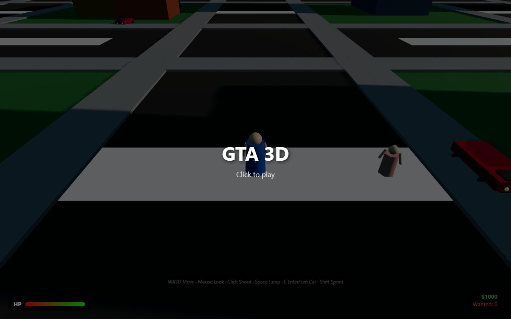
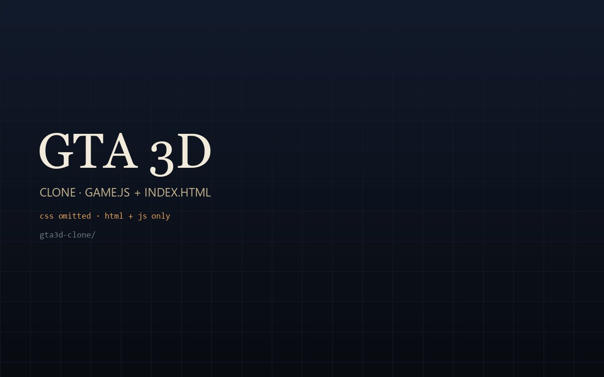
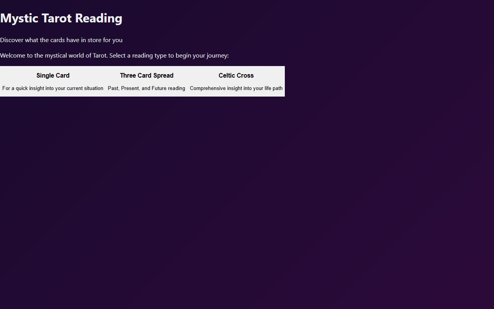
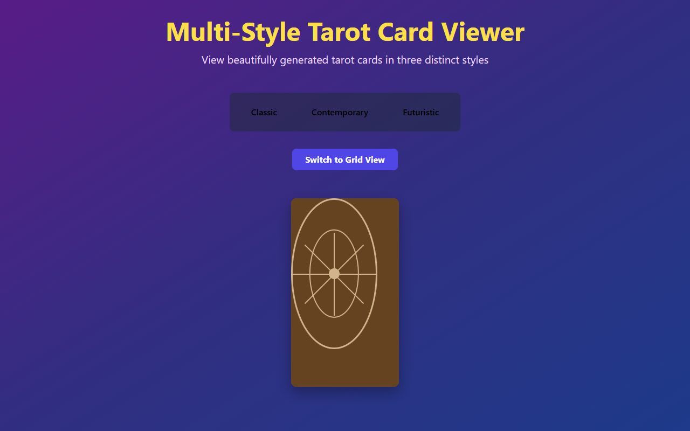

Batch 03 · recovered from F:\repoai
HTML &
JS only.
Two GTA 3D playgrounds and two tarot experiments, copied exactly as requested: only .html and .js. No CSS, images, fonts, textures, model assets or Python environments came along.
The GTA 3D single-file build is intact and playable. The clone's stylesheet was deliberately left behind, so its page is unstyled. The Tarot builds have their HTML/JS but not their generated images or Angular assets; they are included as source fragments, not finished experiences.

single file · playableGTA 3D
A compact open-world test: streets, cars, pedestrians, a wanted level.
gta3d/index.html
html + js · no cssGTA 3D Clone
The larger build — game.js and an HTML shell; its stylesheet stayed behind.

angular · html + jsTarotGame
An Angular tarot reading app: single card, three-card spread and Celtic cross.
dist/tarot-game/browser/
template · assets missingTarot Card Viewer
A multi-style card viewer template. The generated cards it expects were not copied.
templates/index.html